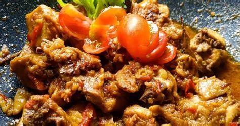

Resep Rica-rica

Berikut adalah resep rica-rica ayam, salah satu masakan tradisional Indonesia yang lezat:
Bahan - Bahan :
- 500 gram daging ayam, potong sesuai selera
- 5 buah cabai merah keriting (atau sesuai selera)
- 5 buah cabai rawit merah (sesuai selera)
- 4 siung bawang putih
- 4 buah bawang merah
- 2 cm jahe, memarkan
- 3 lembar daun jeruk
- 2 batang serai, memarkan
- 3 lembar daun salam
- 1 sendok makan minyak sayur untuk menumis
- Garam secukupnya
- Gula secukupnya
- Air secukupnya
Cara Memasak Rica-rica:
- Siapkan bumbu rica-rica
- Haluskan cabai merah keriting, cabai rawit, bawang putih, dan bawang merah
dengan menggunakan cobek atau blender. Anda dapat menyesuaikan jumlah cabai sesuai dengan tingkat kepedasan yang diinginkan.
- Tumis bumbu
- Panaskan minyak sayur di wajan, tumis bumbu yang sudah dihaluskan hingga harum dan berubah warna.
- Masukkan daging ayam
- Masukkan potongan daging ayam ke dalam wajan. Aduk rata hingga daging berubah warna dan terbalut dengan bumbu.
- Tambahkan bumbu lain
- Masukkan jahe, daun jeruk, serai, dan daun salam ke dalam wajan.
Aduk rata hingga aroma harum tercium.
- Tambahkan air
- Tambahkan air secukupnya untuk memasak daging. Tutup wajan dan biarkan daging matang dan empuk.
Aduk sesekali dan tambahkan air jika diperlukan.
- Koreksi rasa
- Setelah daging matang, tambahkan garam dan gula secukupnya sesuai selera. Aduk rata dan cicipi,
sesuaikan rasa jika perlu.
- Sajikan
- Rica-Rica ayam siap disajikan. Hidangkan panas dengan nasi putih.
Selamat menikmati rica-rica ayam yang lezat! Anda dapat menyesuaikan bumbu dan
pelengkap sesuai dengan selera Anda.